Confirm the order, validate the receipt, create the vendor bill, post it and register the payment – with the Confirm Order button or as a batch on any selection of RFQs. Each order runs in its own savepoint, so one bad order never blocks the others.
When goods arrive as ordered and the vendor is paid on receipt, the procure-to-pay chain is the same five clicks every time. This module does them for you, safely.
Four steps from a fresh install to automated purchasing.
All screenshots were taken on Odoo 18 with the standard demo data (vendors Wood Corner, Gemini Furniture, Azure Interior, Ready Mat) and the generic chart of accounts.
Settings live in Purchase › Configuration › Settings › Procurement Automation. Select orders in Purchase › Orders › Requests for Quotation or Purchase Orders and open the Actions menu (⚙): Run Procurement Automation... opens the batch wizard, Run Procurement Automation (Company Defaults) runs immediately with the company settings. Both lists get an Automation Status column.
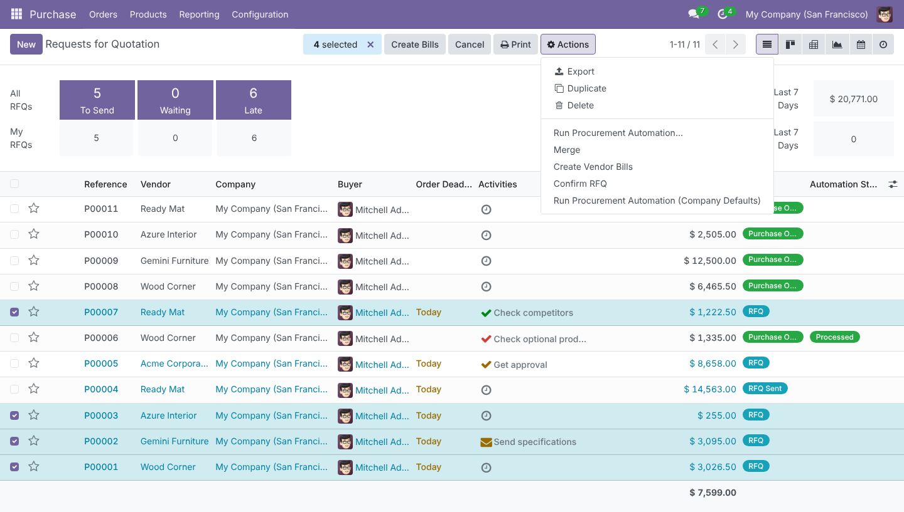
Purchase Automation is the master switch. Pick the Scenario, the Bill Date rule (Today, Receipt Validation Date or Order Date) and the Backorders policy. Run on PO Confirmation hooks the automation on the confirm/approve buttons, and On Confirmation Error decides whether a failure keeps the order confirmed (and logs it) or blocks the confirmation. Restrict to Purchase Managers limits who triggers it. Journals sets an optional Vendor Bill Journal and the Payment Journal / Payment Method for scenario C.
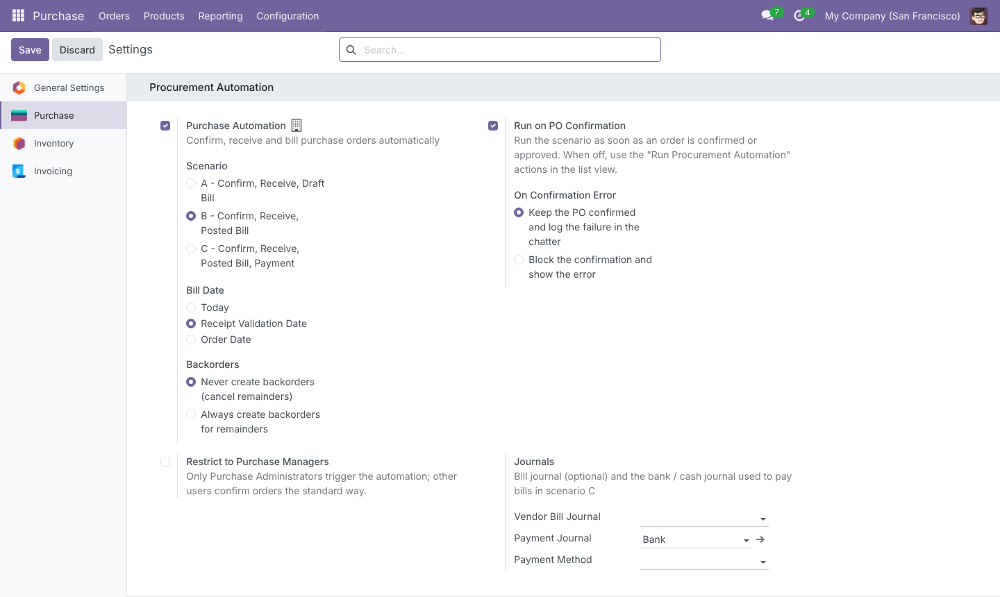
With Run on PO Confirmation on, confirming P00006 (scenario B) validated the receipt, created the bill in Vendor Bills and posted it. Received and Billed match the ordered quantities and the chatter lists every step. With two-step approval, the automation starts when the manager clicks Approve Order.
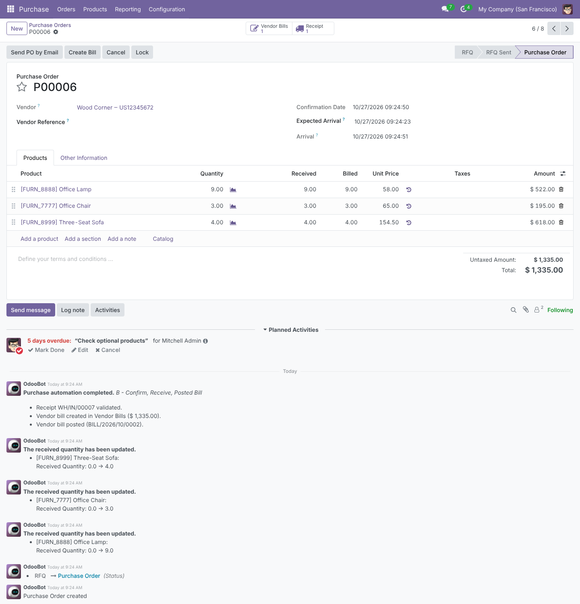
Run Procurement Automation... works on RFQs and confirmed orders. Change the Scenario and Backorders policy for this run, turn on Generate Lot/Serial Numbers, and override Receive In Warehouse, Bill Journal, Bill Date, Payment Journal, Payment Method and Payment Date. Empty overrides fall back to the company settings, which the run never changes.
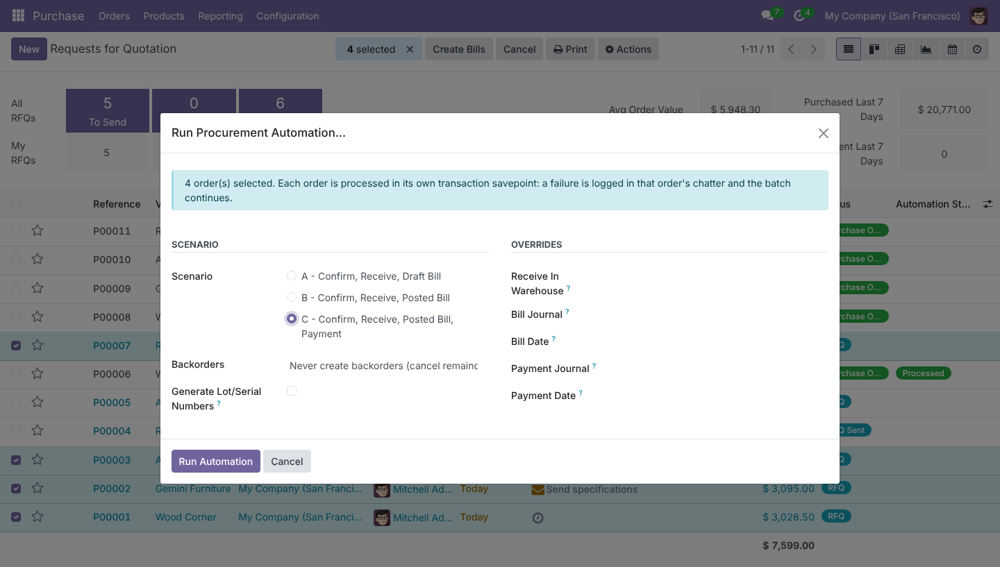
The wizard ends with three counters – Processed, Nothing to do, Failed – and the exact error per failed order. Here P00002, P00003 and P00007 went all the way to payment while P00001, which holds a lot-tracked Drawer without lot numbers, was rolled back. Open Failed Orders lists them.
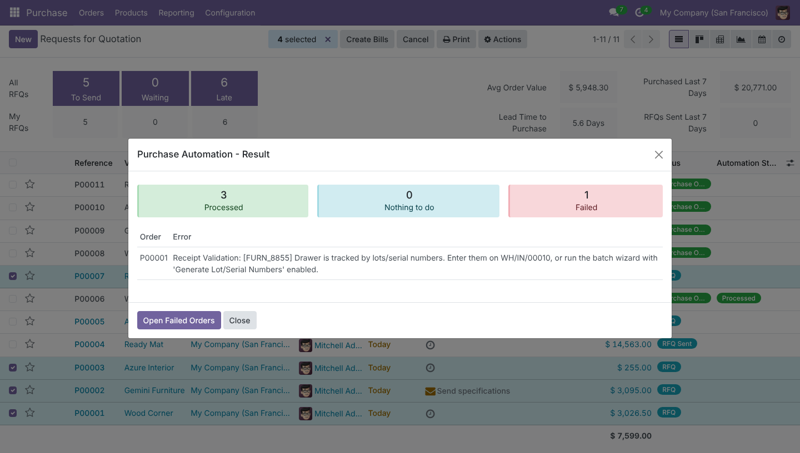
For P00002 the chatter shows the full chain: order confirmed, receipt validated, bill created, bill posted, payment registered. The bill carries the PAID ribbon and an Amount Due of zero; the payment was made through Odoo’s own Register Payment wizard on the configured bank journal.
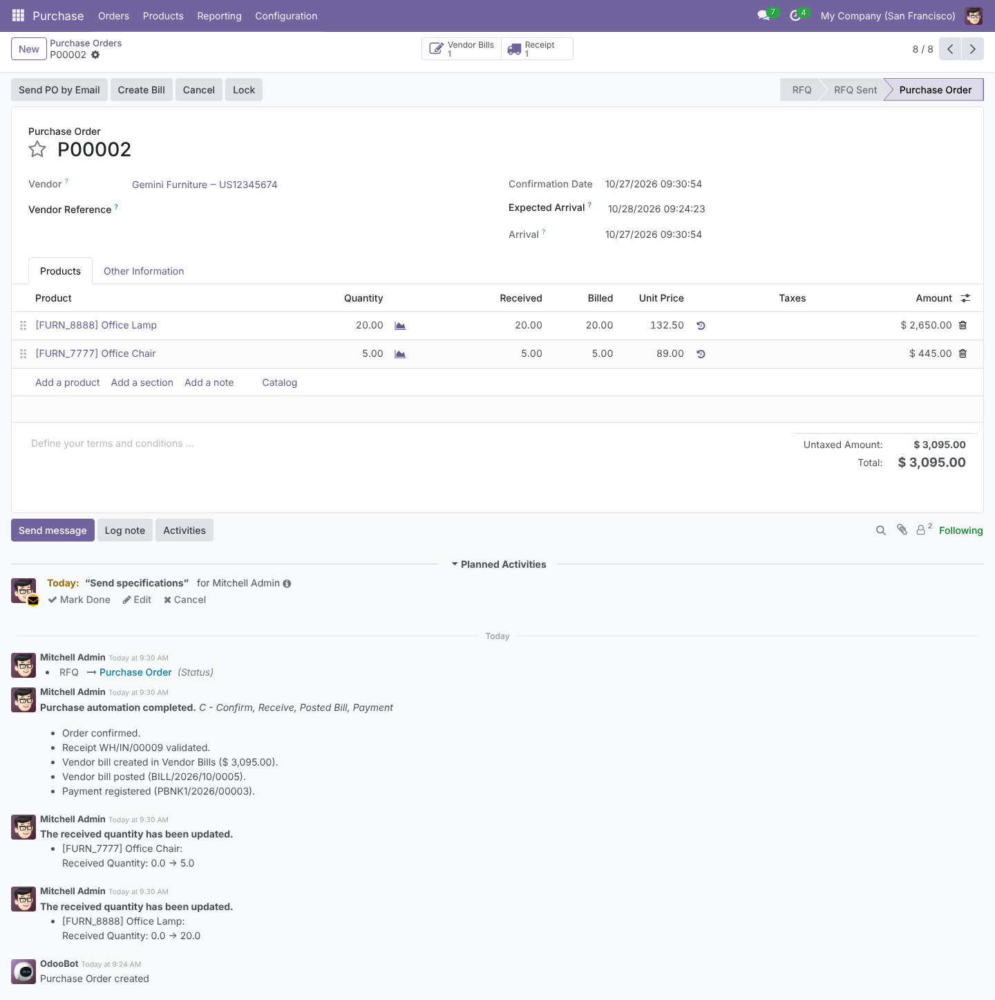
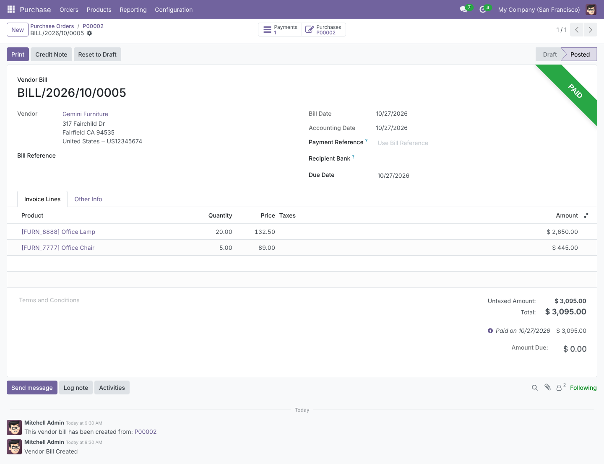
A failed order gets a warning banner with the step and the reason, a chatter note that confirms everything of that run was rolled back, and the Failed status. P00001 is still an RFQ with no receipt, bill or payment – nothing half-done to clean up.
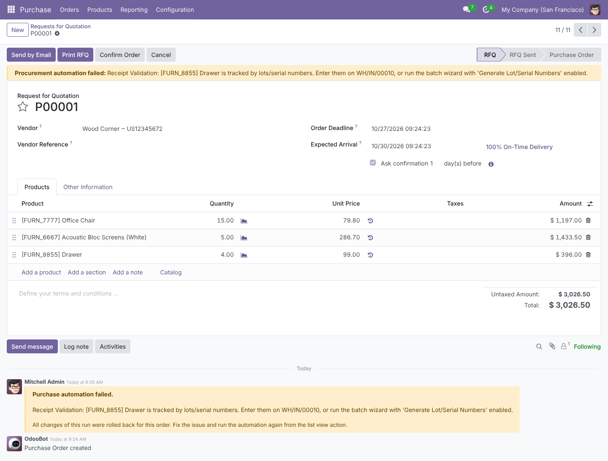
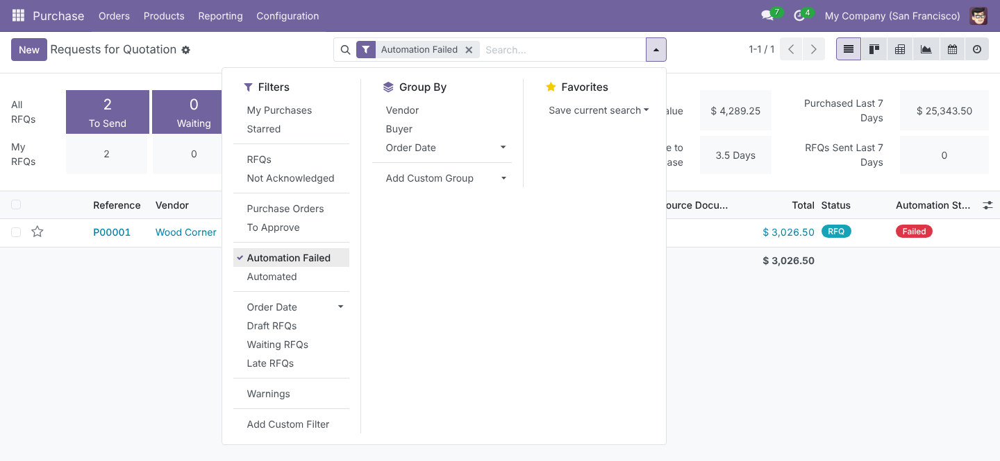
The Purchase Orders list shows Processed / Failed badges beside Odoo’s Billing Status, so you see at a glance that every automated order is Fully Billed while the other demo orders still show Nothing to Bill. The form also shows the Last Automation Run in Other Information.
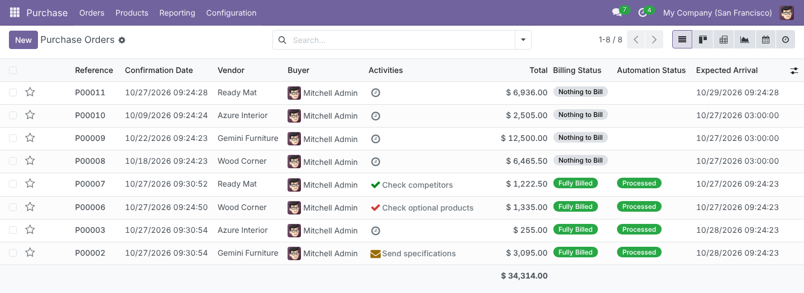
All 137 terms – settings, wizard, actions, statuses, chatter notes and error messages – ship with an Arabic translation, displayed right-to-left. A .pot template is included for other languages.
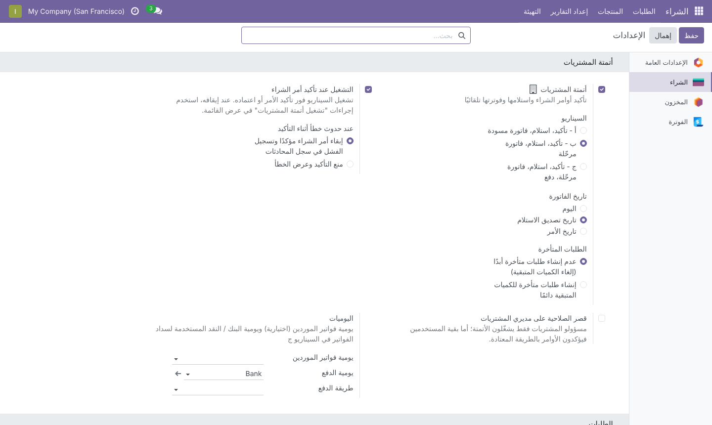
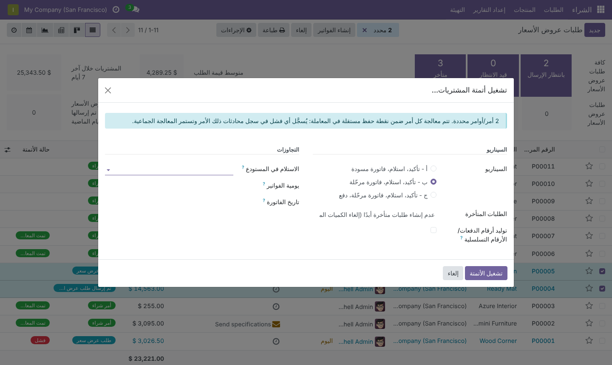
Every scenario confirms the order and validates its receipts; they differ in how far the vendor bill goes.
| Scenario | Vendor bill | Payment |
|---|---|---|
| A – Draft Bill | Draft | – |
| B – Posted Bill | Posted | – |
| C – Posted Bill, Payment | Posted | Paid / In Payment |
Every case below is handled in the code and most are covered by a test.
P00001-FURN-8855-0001.No new groups: the module uses Odoo’s purchase groups and runs every step with the user’s own access rights.
| Who | Can |
|---|---|
| Purchase / User | Triggers the automation by confirming orders and uses both list actions and the wizard, unless the company restricts it to managers. |
| Purchase / Administrator | Edits the Procurement Automation settings and is always allowed to run the automation. |
| Restrict to Purchase Managers on | Other users confirm orders the standard way (no automation) and are refused by the list actions. |
| Inventory & Invoicing rights | Receipts, bills and payments are created as the current user, so the usual Inventory and Invoicing permissions still apply. |
| Multi-company | Settings are stored per company; journals and warehouses must belong to the order’s company. |
| Odoo version | 18.0, Community and Enterprise |
| Depends on | purchase_stock, account |
| Python dependency | None |
| Menus & actions | No new menu. Actions › Run Procurement Automation... (wizard) and Actions › Run Procurement Automation (Company Defaults) (server action) on the RFQ and Purchase Order lists |
| Settings | Purchase › Configuration › Settings › Procurement Automation (stored on res.company) |
| Models | New wizard purchase.automation.wizard; fields added to res.company, res.config.settings, purchase.order (Automation Status, Last Automation Error / Run) and account.move (Created by Purchase Automation) |
| Hooks | button_approve() (called by button_confirm() and manager approval) and _prepare_invoice(); native button_validate(), action_create_invoice(), action_post() and account.payment.register |
| Transaction safety | cr.savepoint() per order, row lock with FOR UPDATE NOWAIT, serialization failures re-raised so Odoo can retry |
| Translations | Arabic (i18n/ar.po), template advanced_purchase_order_automation.pot |
| Automated tests | 31 TransactionCase tests: the three scenarios, settings, manager restriction, double validation, bill date and journal rules, services, both error policies, batch isolation, server action, wizard overrides, lot/serial generation, backorders, resume, manual bills, cancelled orders and multi-company batches |
| License | LGPL-3 |
Questions, a demo, or an adaptation to your own process? Get in touch.
✉ ibrahim.yahiah@gmail.com LinkedIn: Ibrahim YahiaAuthor: Ibrahim Yahia · License: LGPL-3